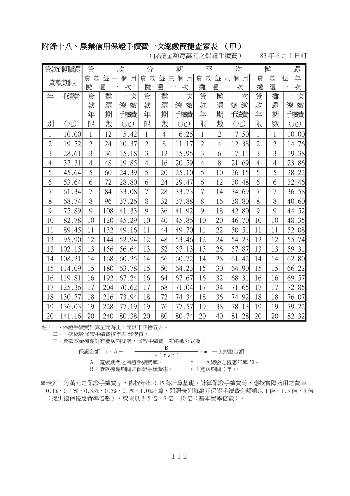

附錄十八、農業信用保證手續費一次總繳簡捷查索表
手冊頁：112 PDF頁：122／203

查看PDF文字層
下列文字取自PDF既有文字層，僅供搜尋、複製與無障礙輔助。複雜表格的欄列位置可能失真，正式內容請以原頁預覽或PDF為準。
附錄十八、農業信用保證手續費一次總繳簡捷查索表 （甲）
（保證金額每萬元之保證手續費） 83 年 6 月1 日訂
貸 款 到 期 償 還 貸 款 分 期 平 均 攤 還
貸款期限 貸款每一個月
攤還一次
貸款每三個月
攤還一次
貸款每六個月
攤 還 一 次
貸 款 每 年
攤 還 一 次
年
別
手 續 費
（元）
貸
款
年
限
攤
還
期
數
一 次
總 繳
手 續 費
（元）
貸
款
年
限
攤
還
期
數
一 次
總 繳
手 續 費
（元）
貸
款
年
限
攤
還
期
數
一 次
總 繳
手 續 費
（元）
貸
款
年
限
攤
還
期
數
一 次
總 繳
手 續 費
（元）
1 10.00 1 12 5.42 1 4 6.25 1 2 7.50 1 1 10.00
2 19.52 2 24 10.37 2 8 11.17 2 4 12.38 2 2 14.76
3 28.61 3 36 15.18 3 12 15.95 3 6 17.11 3 3 19.38
4 37.31 4 48 19.85 4 16 20.59 4 8 21.69 4 4 23.86
5 45.64 5 60 24.39 5 20 25.10 5 10 26.15 5 5 28.22
6 53.64 6 72 28.80 6 24 29.47 6 12 30.48 6 6 32.46
7 61.34 7 84 33.08 7 28 33.73 7 14 34.69 7 7 36.58
8 68.74 8 96 37.26 8 32 37.88 8 16 38.80 8 8 40.60
9 75.89 9 108 41.33 9 36 41.92 9 18 42.80 9 9 44.52
10 82.78 10 120 45.29 10 40 45.86 10 20 46.70 10 10 48.35
11 89.45 11 132 49.16 11 44 49.70 11 22 50.51 11 11 52.08
12 95.90 12 144 52.94 12 48 53.46 12 24 54.23 12 12 55.74
13 102.15 13 156 56.64 13 52 57.13 13 26 57.87 13 13 59.31
14 108.21 14 168 60.25 14 56 60.72 14 28 61.42 14 14 62.80
15 114.09 15 180 63.78 15 60 64.23 15 30 64.90 15 15 66.22
16 119.81 16 192 67.24 16 64 67.67 16 32 68.31 16 16 69.57
17 125.36 17 204 70.62 17 68 71.04 17 34 71.65 17 17 72.85
18 130.77 18 216 73.94 18 72 74.34 18 36 74.92 18 18 76.07
19 136.03 19 228 77.19 19 76 77.57 19 38 78.13 19 19 79.22
20 141.16 20 240 80.38 20 80 80.74 20 40 81.28 20 20 82.32
註：一、保證手續費計算至元為止，元以下四捨五入。
二、一次總繳保證手續費按年率 5%優待。
三、貸款本金攤還訂有寬緩期間者，保證手續費一次總繳公式為：
保證金額 ×｛Ａ＋ Ｂ ｝= 一次總繳金額 1+（ｒ×ｎ）
Ａ：寬緩期間之保證手續費率。 ｒ：一次總繳之優惠年率 5%。
Ｂ：貸款攤還期間之保證手續費率。 ｎ：寬緩期間（年） 。
※表列「每萬元之保證手續費」，係按年率 0.1%為計算基礎。計算保證手續費時，應按實際適用之費率
0.1%、0.15%、0.35%、0.5%、0.7%、1.0%計算，即照表列每萬元保證手續費金額乘以 1 倍、1.5 倍、5 倍
（提供擔保優惠費率倍數），或乘以 3.5 倍、7 倍、10 倍（基本費率倍數）。